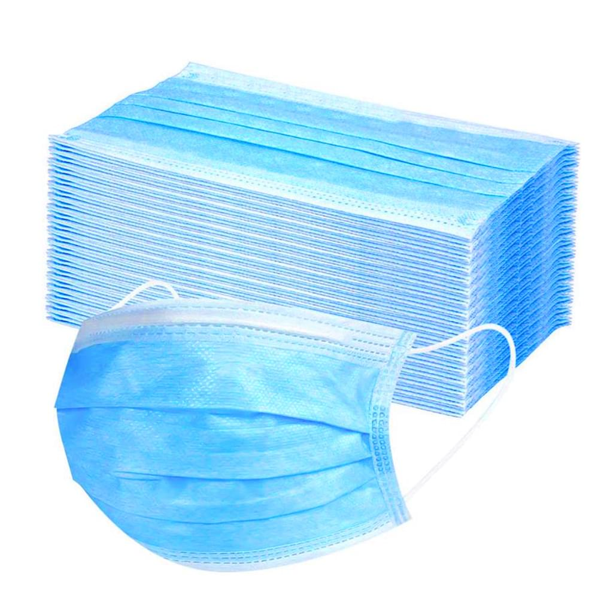
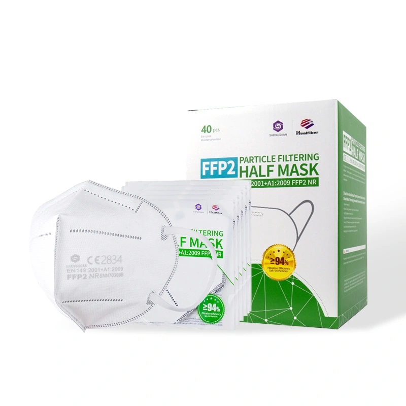
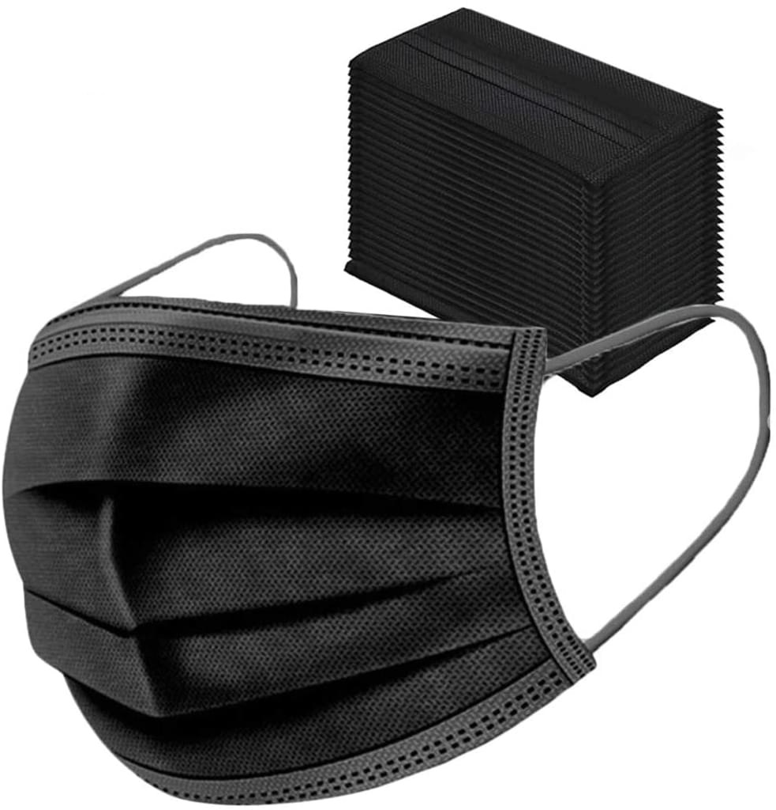

Dermathek
die Apotheke für Sie

Mundschutz & Co
Medizinische Gesichtsmasken (z.B. OP-Masken)
Wenn Unsicherheit besteht, welche Qualität die von Ihnen erworbenen Gesichtsvisiere oder Schilde besitzen, buchen Sie einen Termin in unserem Kontakformular für eine fachliche Beratung.
Hier finden Sie unsere Angebote:
| Einweg Atemschutzmaske | FFP2 Atemschutzmaske | Einwegmaske (Schwarz) |
|---|---|---|
|

|

|

|
|
|
|